デプロイ戦略概要
用語
カットオーバー - 新バージョンまたは別システムへの移行
ダークローンチ - フィーチャーフラグで一部インスタンスのみで機能を有効化。
セグメンテーション - デプロイを小さなチャンクに分割することでリスク軽減。 - リージョン, AZ, インスタンスごとなどで分割。 - タグや Auto Scaling グループでグループ化。
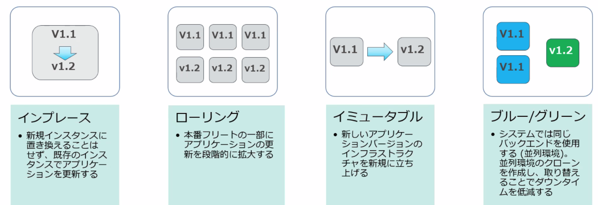
インプレース vs イミュータブル (ホスト環境の継続利用 vs 置き換え) - インプレース - 稼働中インスタンスを落とさずにデプロイ。 - インスタンスが並列しないので低コスト。 - CodeDeploy, Beanstalk, OpsWorks でサポート。 - イミュータブル - インプレースの反対。新しいインスタンス・並列環境を作ってデプロイ。 - EC2 Auto Scaling: AutoScalingReplacingUpdate
ローリング vs Blue/Green (ターゲットグループ=本番環境が単一 vs 並列) - ローリング - 稼働中インスタンスを一部切り離してデプロイし、再びオンラインに戻すを繰り返す。 - ダウンタイムなし。 - インプレース/イミュータブル両方可能。 - CodeDeploy: インプレースの OneAtATime, HalfAtATime - Beanstalk: ローリング, 追加バッチとローリング - EC2 Auto Scaling: AutoScalingRollingUpdate: 既存 Auto Scaling グループ内で新しいインスタンスを立ててローリングアップデート - Blue/Green - Blue/Green の２つの並列環境を作成してトラフィックを振り分け。 - ロールバックが容易。 - トラフィックルーティングの仕組みが必要。 - 原理的にイミュータブル。 - CodeDeploy, Beanstalk, OpsWorks, CloudFormation - デプロイ設定 (Deployment configuration) - AllAtOnce: 一度で切り替え - Canary: 比率を指定して２段階目で切り替え - Linear: 段階的に振り分け
カナリアリリース (Canary Release) - 目的：新バージョンの安全性検証。小さな割合→段階的に比率を増やす。 - 典型実装：Blue/Green + 重み付きトラフィックシフト（10%→50%→100%）。 - 成果判断：障害/エラーレート/レイテンシ等の品質指標。問題なら即ロールバック。
A/B デプロイ (A/B テスト) - 目的：複数バリアントの効果比較。置換は前提でない（併存して長期運用も）。 - 典型実装：トラフィック分割（50/50 等）＋ユーザ割当の一貫性（クッキー/ID）。
成果判断：統計検定・サンプルサイズ設計等の実験デザインが中核
Blue/Green デプロイ
概要
- ブルー (既存環境) / グリーン (新しいバージョン) をスイッチ
- 一般的な手法
- DNS カットオーバー
- Auto Scaling グループの交換
AWS での実現方法
Ref. https://d1.awsstatic.com/whitepapers/AWS_Blue_Green_Deployments.pdf
Route53 CNAME 切り替え (AllAtOnce)
- エイリアス (CNAME) が指す ELB の DNS 名を切り替える。
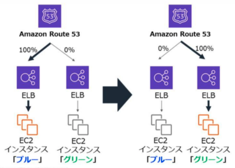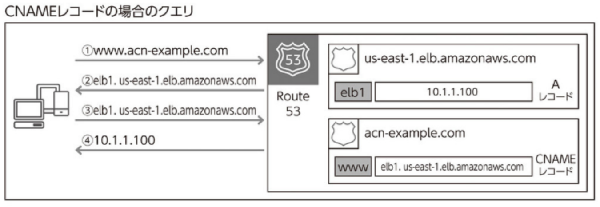
Route53 加重ラウンドロビン
- 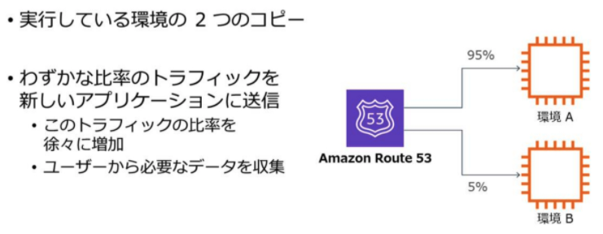
ELB ターゲットグループ切り替え
- Blue に加えて Green の Auto Scaling グループを ELB のターゲットに登録。
- Blue のインスタンスを段階的にスケールインして減らしていく。
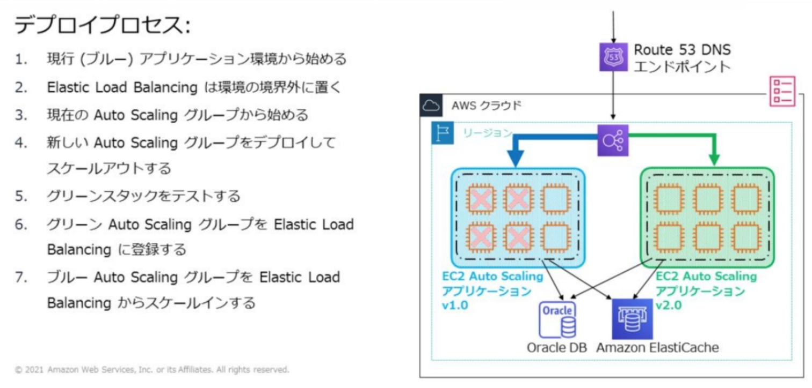
ALB 加重ターゲットグループ
- Blue/Green のターゲットグループに重みを指定。
- 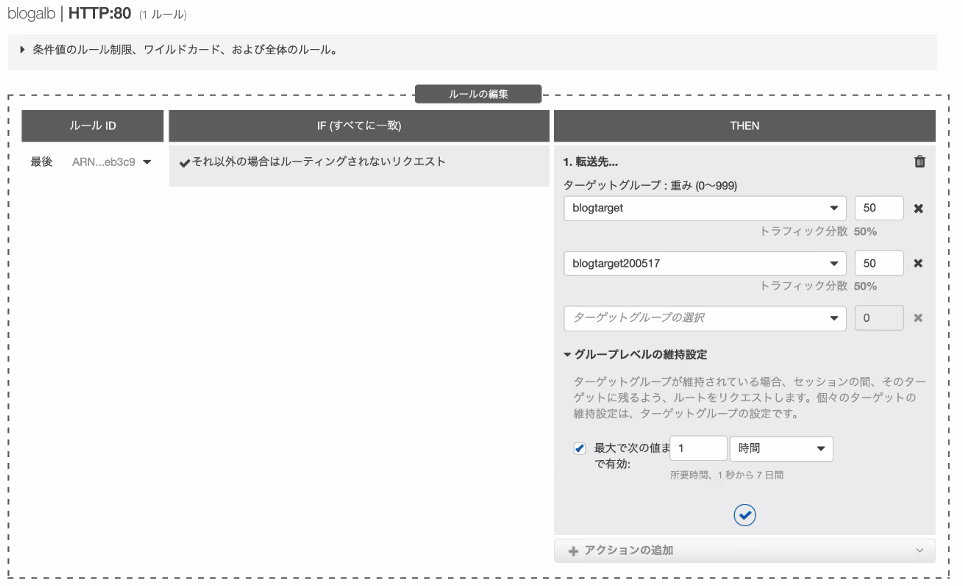
Auto Scaling スケールアウト/スケールイン
- デフォルトの終了ポリシーが古い起動設定により起動されたインスタンスから終了させることを利用。起動テンプレートでAMIを変更後、インスタンス数を増やしてから減らすと自動的に古いインスタンスがなくなる。
- 1. Auto Scaling グループの起動設定を変更して新しい AMI を指定。
- 2. 手動スケーリングで希望容量を 4 から 8 に増やす。新しいインスタンスが 4 加わる。
- 4. 希望容量を 4 に戻す。古いインスタンスが終了される。
- https://www.yamamanx.com/wordpress-update-blue-green/
API Gateway
- Canary ステージを作成して比率を指定。
- 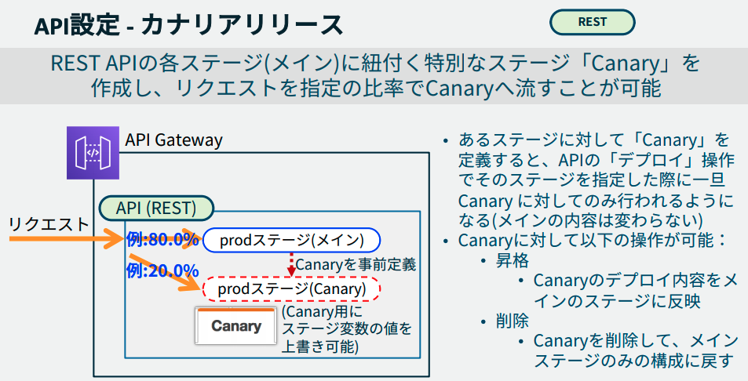
Lambda 加重エイリアス
- route-config でセカンダリのバージョンと比率を設定。
- ユースケース例: API Gateway フロントの Lambda 関数の Blue/Green を API Gateway 側の設定を変更せずに実施できる。
SAM の AWS::Serverless::Function
- DeploymentPreference プロパティでカナリアリリースを指定できる。
CodeDeploy
- EC2, オンプレ: ALB の加重ターゲットグループで移行。
- ECS: サービスに新しいタスクセットを作成、ELB の加重ターゲットグループで移行。
- Lambda: 加重エイリアスを使用。
Elastic Beanstalk
- eb clone/swap による DNS カットオーバー
- eb deploy の展開タイプ
- All at once ... インプレースで全部デプロイ
- 全インスタンスが一旦停止。
- Rolling / Rolling with additional batch ... ローリング
- ELB ターゲットグループのインスタンス入れ替え。
- Immutable ... イミュータブル
- Auto Scaling グループの交換。
- All at once ... インプレースで全部デプロイ
CloudFormation
各サービスのデプロイ方式を設定可能
- UpdatePolicy（ASGの更新方式）
- AutoScalingRollingUpdate：同一ASG内でローリング更新。
- MinInstancesInService（稼働を維持する最小台数）
- MaxBatchSize（一度に入れ替える台数）
- PauseTime（各バッチ後の待機。PT5MなどISO8601）
- WaitOnResourceSignals（trueならcfn-signal待ち）
- AutoScalingReplacingUpdate：ASGを置換（Blue/Green）。
- WillReplace: true → 新ASGを作って切替（丸ごと置換）
- WillReplace: false → 置換しない（=ローリング側設定を使う想定）
- CreationPolicy（リソース完成待ち）
- ResourceSignal と cfn-signal をWaitOnResourceSignalsとセットで使う。
- 目的：インスタンスの初期化（UserData等）完了をCFnが待つ。
- ASG ローリング
UpdatePolicy:
AutoScalingRollingUpdate:
MinInstancesInService: 4
MaxBatchSize: 2
PauseTime: PT5M
WaitOnResourceSignals: true
CreationPolicy:
ResourceSignal:
Timeout: PT10M
- **ASG 全置換 (Blue/Green) **
UpdatePolicy:
AutoScalingReplacingUpdate:
WillReplace: true
- ECS::Service > DeploymentController
- Type: ECS → ECSネイティブのローリング
MinimumHealthyPercent/MaximumPercentを設定
- Type: CODE_DEPLOY → CodeDeployでBlue/Green
- 試験では“Blue/Greenを実現するのはどれ？”の選択肢で問われやすい
- Type: ECS → ECSネイティブのローリング
Type: AWS::ECS::Service
Properties:
DeploymentController:
Type: CODE_DEPLOY
- Lambda の段階配分
- Lambda Alias の RoutingConfig で重み付け配分可能。
- 本格的な自動ロールバックやアラーム連動は CodeDeploy 側が得意。
- UpdateReplacePolicy / DeletionPolicy
- 置換・削除時のリソース保持/スナップショット/削除を制御。
- よく出る組み合わせ：RDS/S3 で
Snapshot、S3バケットはRetainに注意。
- Change Sets
- 本適用前に差分を可視化してリスク低減。
- 本番環境での安全な変更手順として押さえる。
OpsWorsk
CodeDeploy のデプロイタイプ
EC2/オンプレ
- インプレース (=ローリング)
- Blue/Green (=イミュータブル)
ECS, Lamda
- Blue/Green (仕組み的にコンテナやLambdaはインプレース切り替えの概念がない)
デプロイ設定

EC2/オンプレ
インプレース(=ローリング)
- 稼働中サーバを停止せずに新バージョンのアプリを配置/起動する。
- 各インスタンスでアプリを停止後、新リビジョンをインストールして起動・検証。
Blue/Green デプロイ(=イミュータブル)
- Green のインスタンス群を起動、新リビジョンをインストールして起動・検証。
- ELB で実現されるので ELB が必須。
- 検証を通った Green インスタンスを ELB に登録し、Blue インスタンスを登録解除。
- 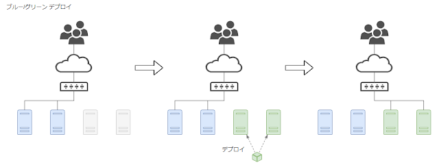
- Auto Scaling グループの自動コピー: デプロイグループに Auto Scaling グループを指定した場合。Auto Scaling グループ全体の置き換えによるデプロイメントを行う。
- Auto Scaling グループの自動コピーを指定しない場合、deployment 作成時に個別にインスタンスを指定することになる。
- 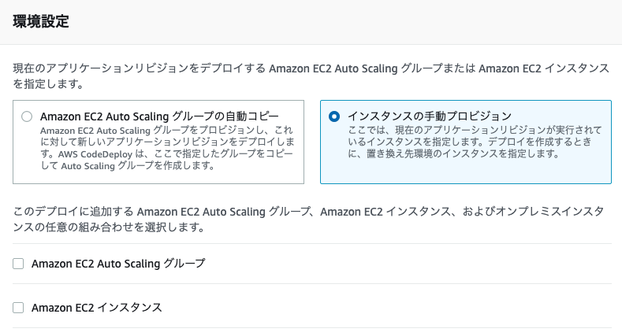
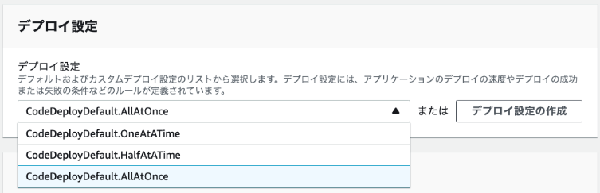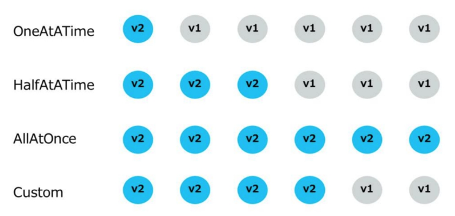
カスタム
- Half の代わりの割合か台数で必要な稼働中インスタンス数を指定する。
- 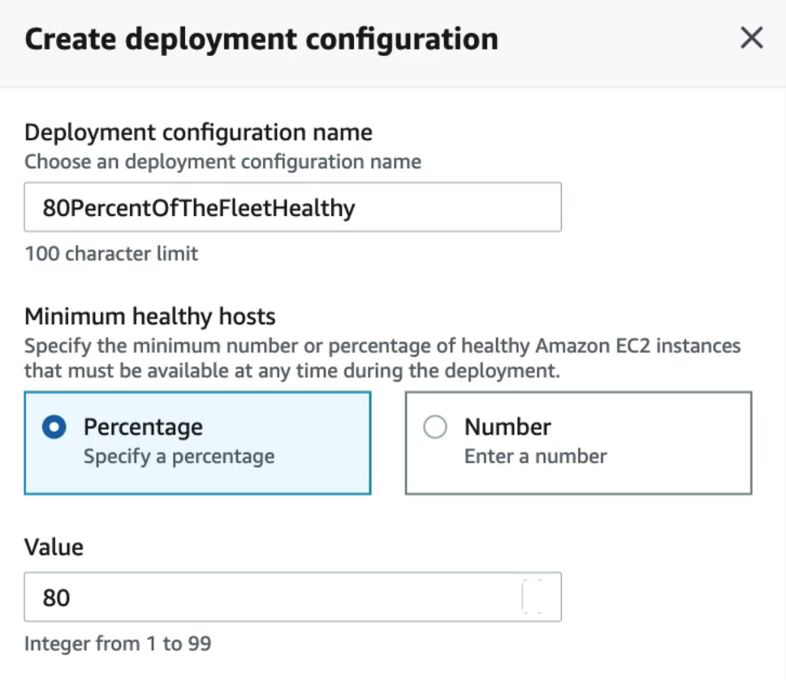
ECS
サービスに新しいタスクセットを作成、ELB の加重ターゲットグループで移行。
- CloudFormation スタックによる Blue/Green デプロイもある。
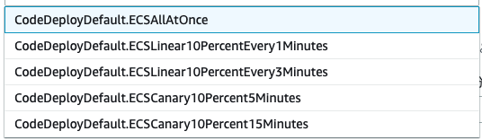
- Canary は2段階。Liner は10%ずつ段階的に。
Lambda
新しいバージョンを発行し、加重エイリアスを使う。
- エイリアスはバージョンへのポインタ。別バージョンに簡単に切り替えられる。
- 加重エイリアスは2つのバージョンへのルーティング比率を指定する。
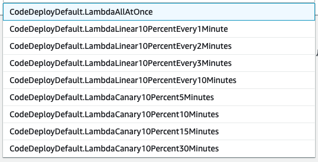
Ref. https://docs.aws.amazon.com/ja_jp/codedeploy/latest/userguide/deployment-configurations.html
Elastic Beanstalk のデプロイ
デプロイポリシー (Deployment policy)
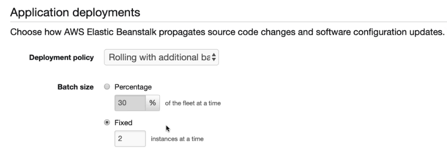
All at once
- 単純なインプレースデプロイ。新バージョンを全インスタンスに同時展開。
- 環境の全インスタンスのアプリケーションが短時間停止する。
- 展開終了までの合計時間は最短。インスタンスの追加コストなし。
Rolling
- 環境のインスタンスを複数バッチに分割、バッチごとに新バージョンをデプロイ。
- バッチサイズ分のインスタンスを LB からデタッチしてデプロイ実施。ヘルスチェックが通ればそのバッチを LB に再アタッチ。全インスタンスにデプロイがされるまで繰り返し。
- インスタンスの追加コストなし。
- 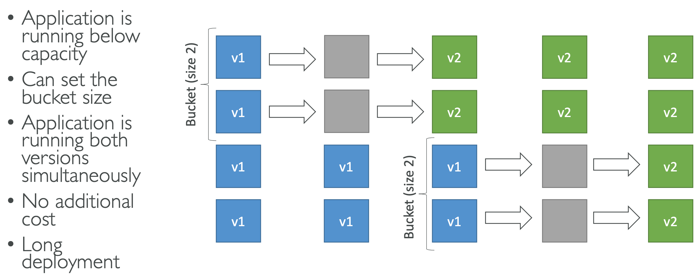
Rolling with additional batch
- バッチサイズ分の新しいインスタンスにデプロイして環境に追加した後でローリングを実行。
- 追加バッチのインスタンスは最終的には消去される。
- 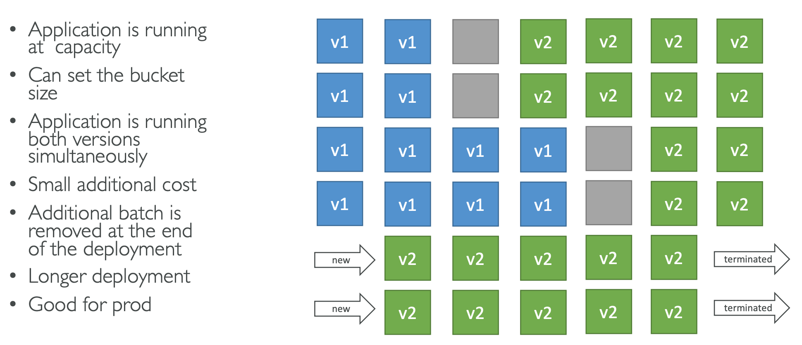
Immutable
- 別の Auto Scaling グループを作成して新バージョンを展開したインスタンスのフルセットを起動。
- 新しいインスタンスでヘルスチェックが FAIL した場合は終了し、元のインスタンスをそのまま残す。(FAIL 時のロールバックが迅速)
- Blue のインスタンスは削除されるのでイミュータブル。
- 一時的にインスタンスコストが二倍になるがロールバックが容易。
- 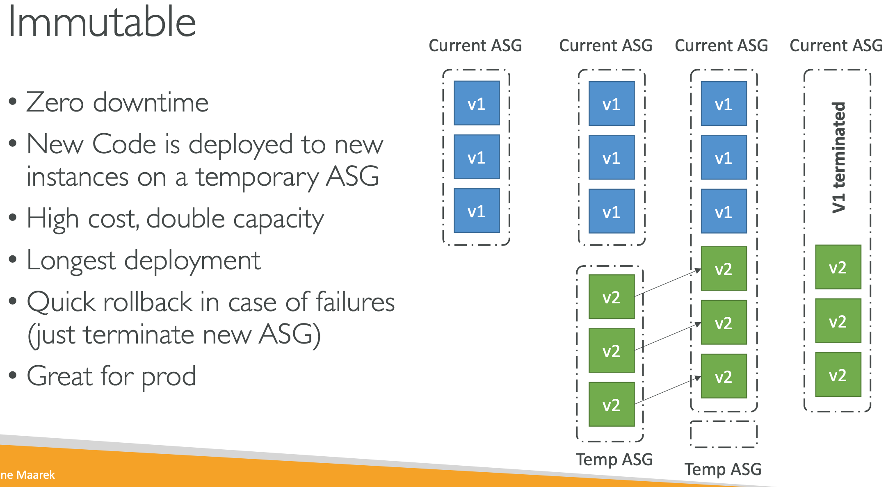
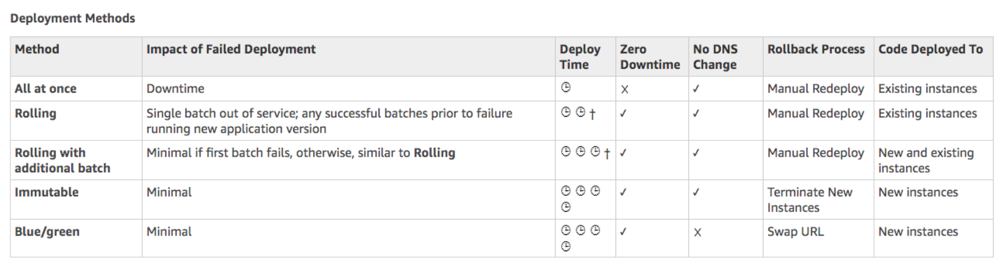
手動 Blue/Green デプロイ
- eb clone で既存スタックのクローンを作成後、新バージョンをデプロイしてテスト。
- eb swap で内部の CNAME を既存スタックから新スタックに切り替え。(DNS カットオーバー)
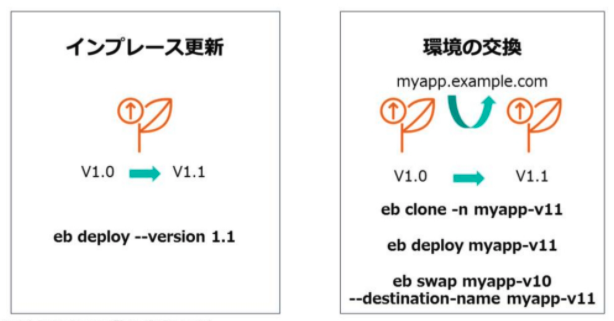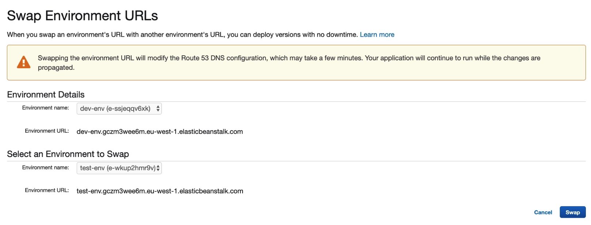
ECS のデプロイ
サービスの deploymentController 設定
次のいずれかに設定する:
- ECS
- ローリング更新
- CODE_DEPLOY
- Blue/Green
- EXTERNAL
- ECS API でサービス・タスクを制御する外部のデプロイコントローラー
- Ref. https://docs.aws.amazon.com/ja_jp/AmazonECS/latest/userguide/service_definition_parameters.html
ECS (ローリング更新)
サービスのタスク定義を更新すると ECS はローリングデプロイを実施する。
ECS は古いバージョ ンのコンテナへの接続をドレイニングし、新しいコンテナを ALB に登録する。
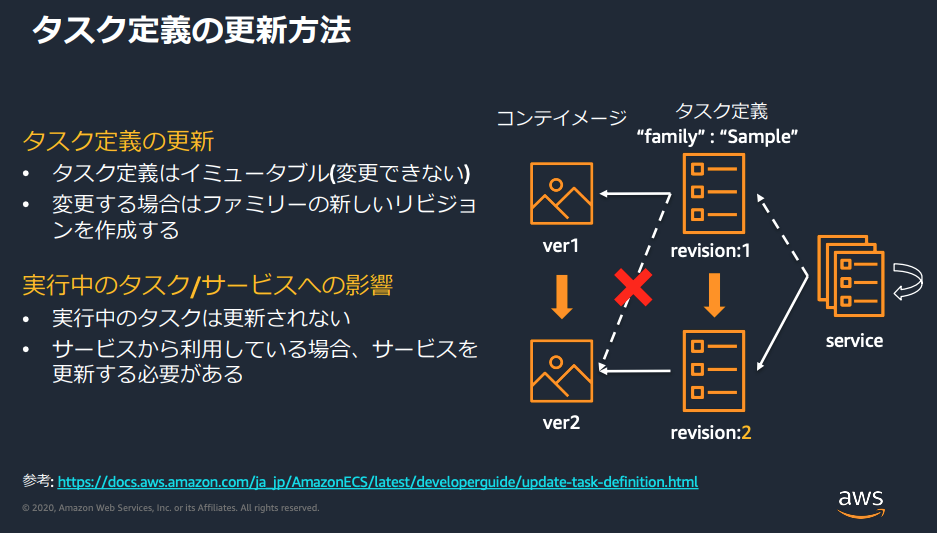
CodeDeploy (Blue/Green)
本番トラフィックの送信前に Hooks の Lambda でデプロイを検証できる。
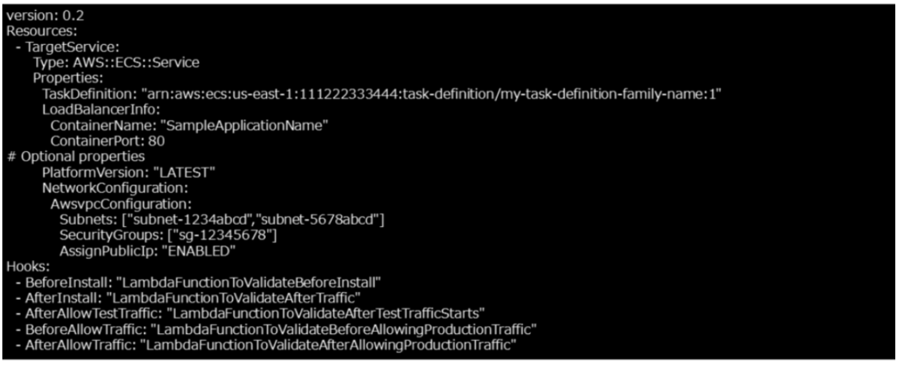